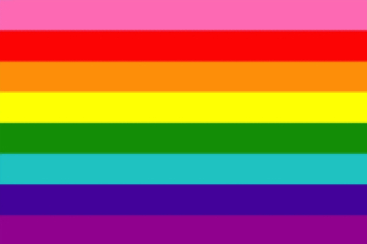
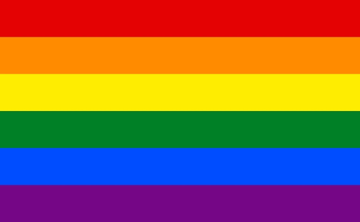
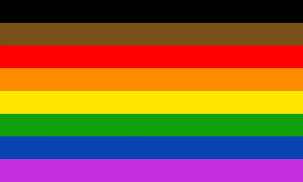
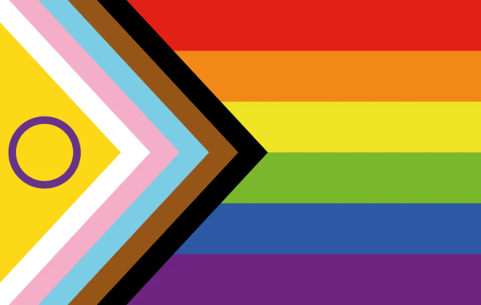
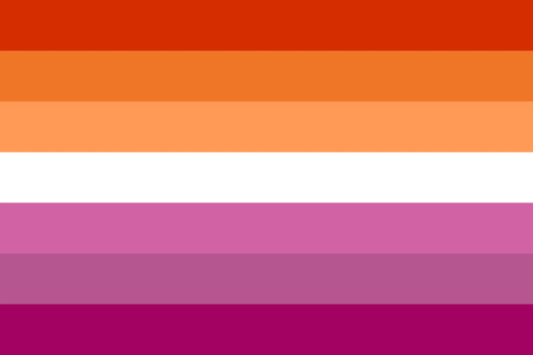
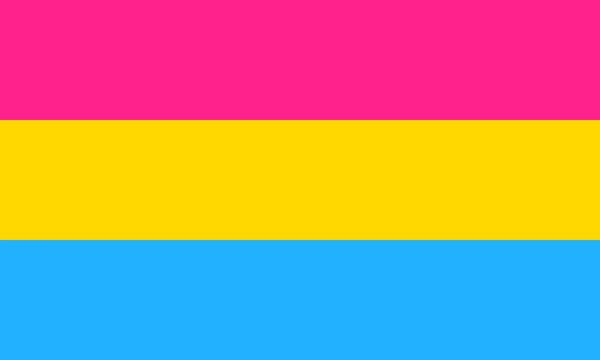
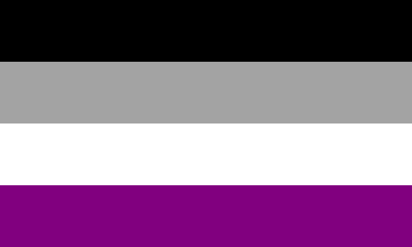
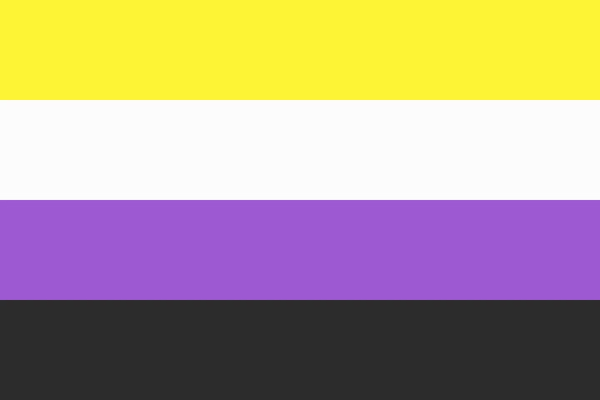
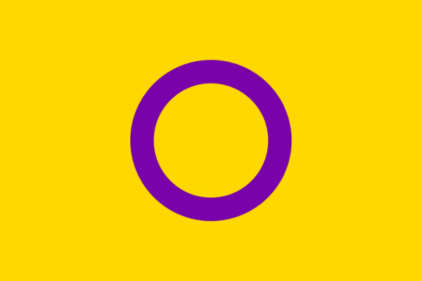

Pride Flag Collection!
This list is not all encompassing – click here to see more flags :)
Gilbert Baker Pride Flag (1977)
Six Color Pride Flag (1979)
Philadelphia Pride Flag (2017)
Progressive Pride Flag (2018)
Lesbian Pride Flag
Gay Pride Flag
Bisexual Pride Flag
Pansexual Pride Flag
Asexual Pride Flag
Non-binary Pride Flag
Intersex Pride Flag
